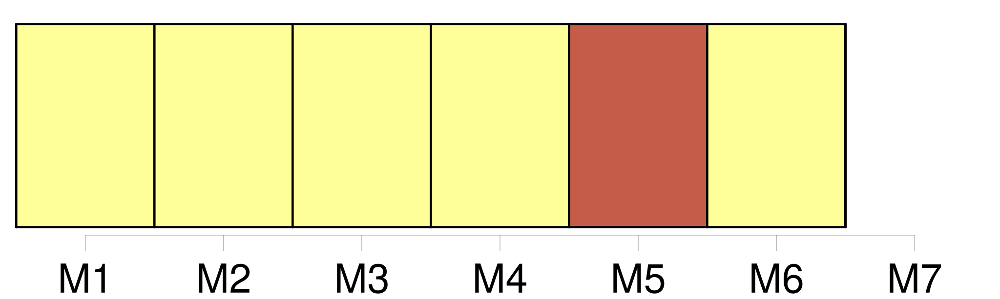
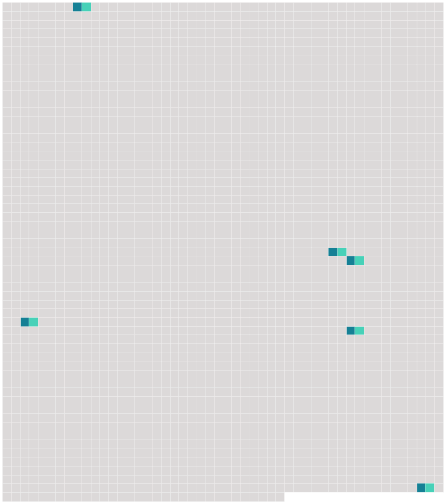

Longueur nb maillons : 6 mentions |
  |
Ils lancent des messages sur la paix et [la guerre] , sur l'avenir de la démocratie, sur la justice et la création de Dieu, sur la relativité, la sérénité et la vie spirituelle. [57 phrases] Notre enfance y est bien pour quelque chose : les édredons de plume de la vie provinciale, nos premières communions, les glycines de l'été quatorze ne nous ont pas préparés à l'apparition de [la guerre] La mort de nos cousins et de nos frères, la licence donnée par l'absence de nos pères, les objets meurtriers de nos aînés ont fourni au désordre de mystérieux aliments : c'était celui de l'enfance miraculeusement soustrait aux complots pacifiques de l'ordre : [la guerre] nous a permis de vivre. [8 phrases] Ces journées des dupes se déroulent dans la fausse lumière de foire nationale du lendemain de [la guerre] : elles ont commencé avec le matin de l'armistice, la seule fête des rues que j'aie vue. [1 phrases] Les combattants vidés de toute [leur guerre] entretiennent cette flamme aussi fidèlement que le gaz imbécile sous l'Arc-de-Triomphe : éclatants de l'orgueil insolent d'avoir été forcés aux sacrifices, ils exploitent devant nous les morts nationaux. [35 phrases] D'autres flambés jusqu'à la peau par les lumières de Paris s'habituaient à mourir dans les trous, assiégés par les images femelles qui s'étaient terrées un peu partout au sortir de [la guerre] : gens de loisir, ils vivaient dans un état horrible de fausse naïveté encore nommée poésie, simplement enfoncés dans le mal dont ils n'essayaient pas de regarder les raisons. |
 |
La ressource peut être téléchargée sur la page Ortolang
Si vous avez des questions ou vous voyez des erreurs, merci d'envoyer un mail à silvia.federzoni89@gmail.com
Site développé par S. Federzoni (contact)